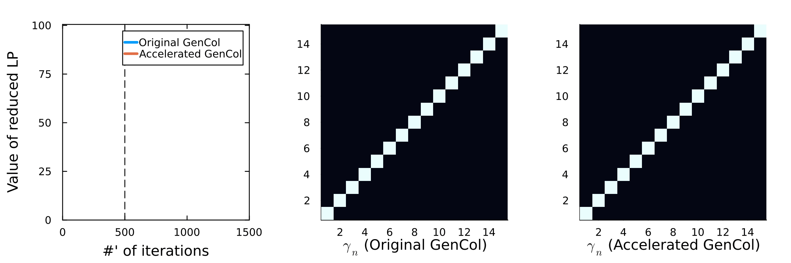
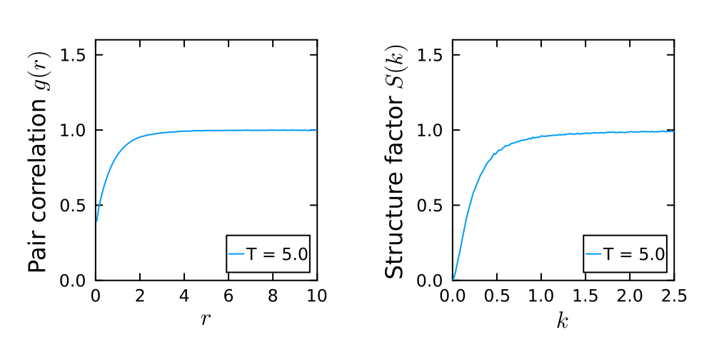
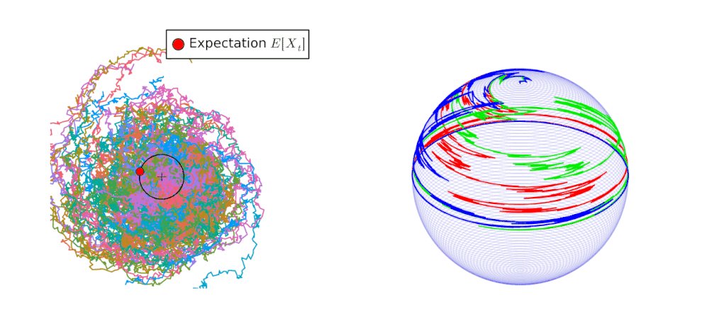

Webpage of R.L.
I am a postdoctoral fellow at École des Ponts (CERMICS),
affiliated with the MATHERIALS team at INRIA, under the supervision
of Virginie
Ehrlacher, Tony
Lelièvre, and Julien Reygner. My
research is supported by the HighLEAP
ERC grant, led by Virginie Ehrlacher.
I completed my PhD at Université Paris-Dauphine under the
supervision of Mathieu
Lewin, where I was a member of the MDFT
ERC grant team. Prior to that, I studied at École Polytechnique and
École Normale Supérieure de Paris-Saclay.
You can contact me at firstname.name@enpc.fr.
Research interests
- Theory and numerics of optimal
transport especially its multimarginal extension as it appears
in density
functional theory in quantum chemistry. Here is a partial
overview of some contributions of mine on this subject:
- In [1], I proved that the Kantorovich
potential for the multimarginal optimal transport with Coulomb cost
is a superharmonic function, which can therefore be expressed as
the electrostatic potential generated by a charge density. I then
utilise this parametrisation to numerically solve the multimarginal
optimal transport problem by discretising this charge density and
solving the Kantorovich dual using classical optimisation and Monte
Carlo-type methods.
- In [2], I proved a conjecture regarding
the asymptotics of the Kantorovich potential for repulsive
transportation costs as commonly encountered in physics. This
conjecture can be interpreted as a classical ionization conjecture
for the strictly-correlated
electrons system.
- At the present time, I am working (with Luca Nenna &
Virginie Ehrlacher) on several questions, among which the
regularity of the multimarginal optimal transport
with general costs (and implicitely on the existence of Monge
transport maps in the multimarginal setting), as well as on the
moment-constrained optimal transport and other numerical
methods.
- Study of classical (and continuous) statistical physics systems
such as Coulomb and
Riesz gases, with a particular focus on the existence of the
thermodynamic limit and phase transitions. Here is a contribution
of mine on this subject:
- In [3],
I showed numerical evidences that the one-dimensional Riesz gases
exhibit phase transitions with respect the temperature in the
long-range interaction regime, more precisely for the non-singular
Riesz pair potential with exponent −1 ≤ s ≤ 0.
- Model
order reduction techniques for high-dimensional stochastic
differential equations.
- In the forthcoming paper [4] in collaboration with Virginie
Ehrlacher, Tony Lelièvre and Julien Reygner, we explain how to
build projection of stochastic differential equations onto
submanifolds of ℝd and develop
numerical schemes for these objects that remain exactly onto the
submanifold.
Publications
[1]
R. Lelotte, An external dual charge
approach to the multimarginal optimal transport with coulomb cost,
ESAIM: COCV. (2024). https://doi.org/
10.1051/cocv/2024017.
[2]
R. Lelotte, Asymptotic of the
Kantorovich potential for the optimal transport with
Coulomb cost, (2022). https://doi.org/
10.48550/arXiv.2210.07830.
[3]
R. Lelotte, Phase transitions in
one-dimensional
Riesz gases with long-range
interaction, (2023). https://doi.org/
10.48550/arXiv.2309.08951.
[4]
T. Lelievre, R. Lelotte, V. Ehrlacher, J.
Reygner, Projection of stochastic differential equations onto
submanifolds, (In preparation).
[5]
S. Di Marino, R. Lelotte, Absence of
non-compactly supported minimiser for the Lieb-Oxford
bound, (In preparation).
[6]
R. Lelotte, Quantitave error estimates for
the moment constrained optimal transport, (In preparation).
Teaching material
I was a teaching assistant at Université Paris-Dauphine. Some
personal material for the fourth-year course Analyse
numérique: évolution of Gabriel Turinici are available, namely
a practical work (.pdf, .ipynb) on the
numerical integration of (stiff) ordinary differential equations.
Although the material is fairly standard, I did manage to find an
example of a differential equation y′ = f(t, y)
for a non-Lipschitz dynamics f which nevertheless admits an
unique solution, and for which standard numerical schemes fail to
converge. Another practical work (.pdf, .ipynb) that deals with
numerical integration of stochastic differential equations — with a
somewhat long additional exercise that includes a remarkable result
from random matrix theory and statistical physics.
For the course Analyse des équations aux dérivées
partielles for first year students of Ecole des Ponts, here
are some (sketchy) corrections.
Some slides
Some vignettes
Accelerating the GenCol
algorithm
I am currently working on ways to improve the GenCol
algorithm, notably by the introduction of stochastic rules in
order to update the sparse domain Ω of the reduced OT problem. In
the above .gif, an accelerated version of the GenCol
algorithm is depicted. There is N = 5 marginals with L = 15 points of discretisation
for each marginal, for the Coulomb cost with (one-dimensional)
uniform marginal. On the left, the value of the reduced OT, and the
(two-point) marginal of the reduced optimal transport plan and in
the center and on the right, the (symmetrised) two-point
density.

Phase
transition in the 1D Riesz gases for s ∈ (−1, 0)
Here is a .gif that depicts the simulation of the 1D
Riesz gases when the Riesz exponent s is within the range (−1, 0) – thus between the 1D Coulomb
gas and the Dyson log-gas. On the left, the pair correlation g(r) is depicted at
decreasing temperatures, and we can observe that at sufficiently
low temperature it becomes a periodic function (as in a crystal)
whereas at high temperature it is monotonic (as in a fluid). On the
right, I plot the structure factor S(k) (essentially the
Fourier transform of g(r). It is coherent
with the behaviour seen previously on the pair correlation, as we
can witness the appearance of a so-called Bragg peak(s) at low
temperature, coherent with the formation of a crystalline
phase.

Projection(s) of SDE
onto submanifolds
On the left, we start from the SDE dXt = b(Xt) + dWt
where Wt is a
two-dimensional standard Brownian motion and b(x1, x2) = (x2, −x1),
and we build a projection of this SDE using a principle à
la Dirac–Frenkel, so that the projected SDE be such that its
solution verifies 𝔼[Xt] ∈ 𝕊
where 𝕊 is the unit circle. On the
right, we depict three trajectories for three different ways of
projecting an SDE as introduced in [4]. In the present case, we project
the SDE onto the sphere, meaning that we demand that almost-surely
Xt ∈ 𝕊2.

Some prehistoric works
Here are some prehistoric works that may be of (relatively
minor) interests for students.
- My mémoire de
M2 on the two-dimensional Uniform Electron Gas
through the lens of (multimarginal) optimal transport. Of potential
interests may be the general blueprint to prove Kantorovich
duality, as well as a minor extension to the logarithmic cost of an
important result in the study of the multimarginal optimal
transport problem with Coulomb cost, namely that the electrons are
at optimality far enough from each others.
- My mémoire de
M1 where I study the spectral properties of the N-body electronic Hamiltonian,
and where I extend a result of Lenzman &
Lewin to the molecular setting that states that when the number
of electrons is bigger that N ≥ 4Z + 1 where Z is the number of protons, the
electronic Hamiltonian has no eigenvalues (to wit, the atom is not
stable). Also, of potential interests may be a
comprehensive introduction to the famous Mourre
estimates.